Consolidação das duas primeiras entrevistas de feedback com usuárias-teste do TAIRU, Nelson (viagem à Espanha já realizada) e Vera (três viagens em planejamento: Japão, Vietnã e Noruega). Cada seção traz o contexto de uso, os comentários literais e os prints enviados por eles como evidência.
Nelson usou o app durante uma viagem já realizada, seu feedback é sobre a experiência de uso no dia a dia da viagem e a revisão pós-viagem. Vera ainda não viajou usando o app, ela está usando a ferramenta só pra planejar viagens futuras, seu feedback é inteiramente sobre a fase de organização, antes de embarcar. Vale manter essa diferença em mente ao ler os dois relatos: eles não avaliam a mesma etapa do produto, e é justamente essa combinação que ajuda a cobrir mais do ciclo completo do TAIRU.
Viagem à Espanha (Madrid e Barcelona) já realizada, abril de 2026 · usou o app por 10 dias durante a viagem · entrevista em 20/07/2026
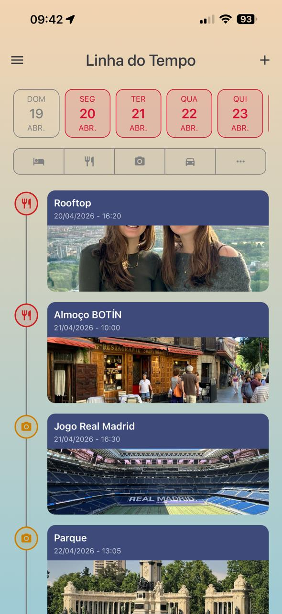
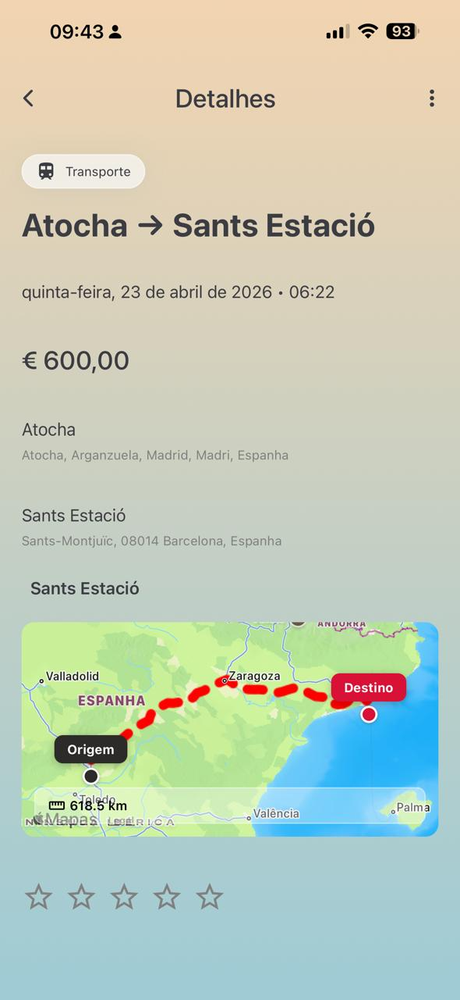
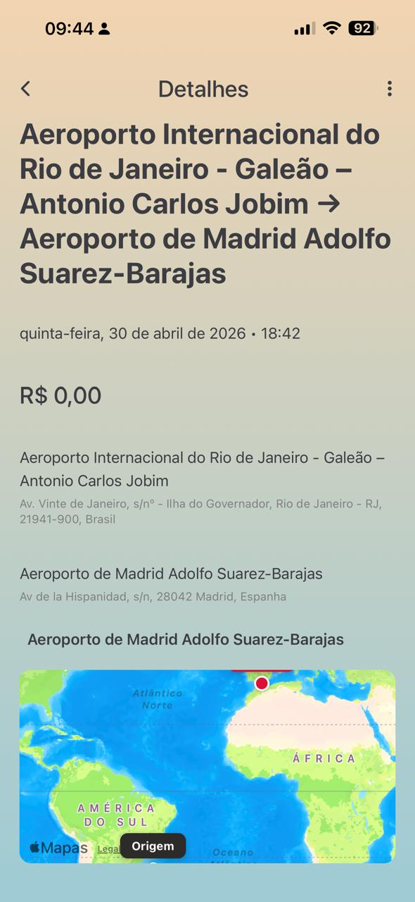
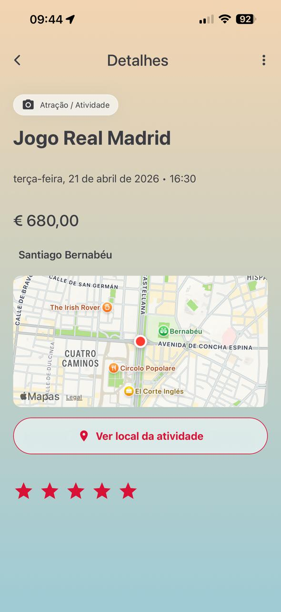
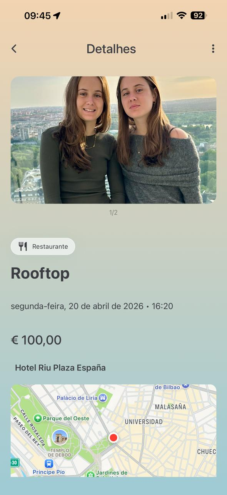
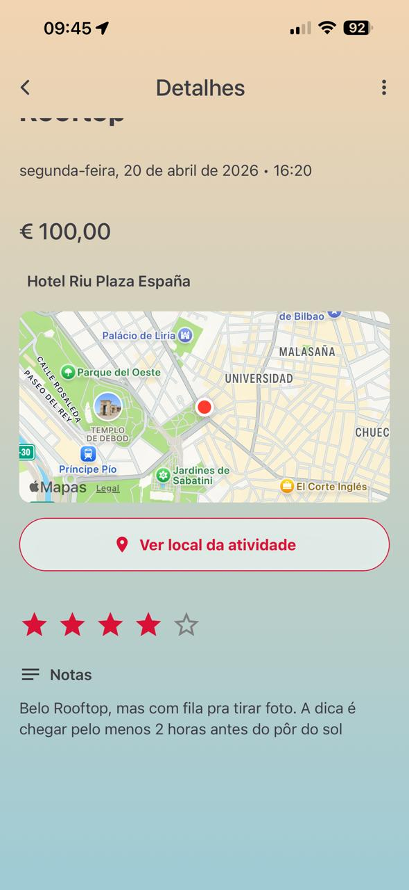
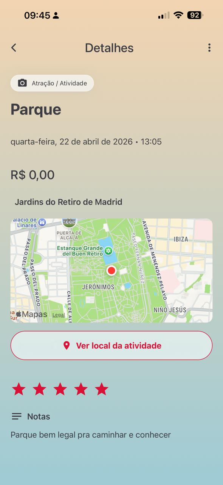
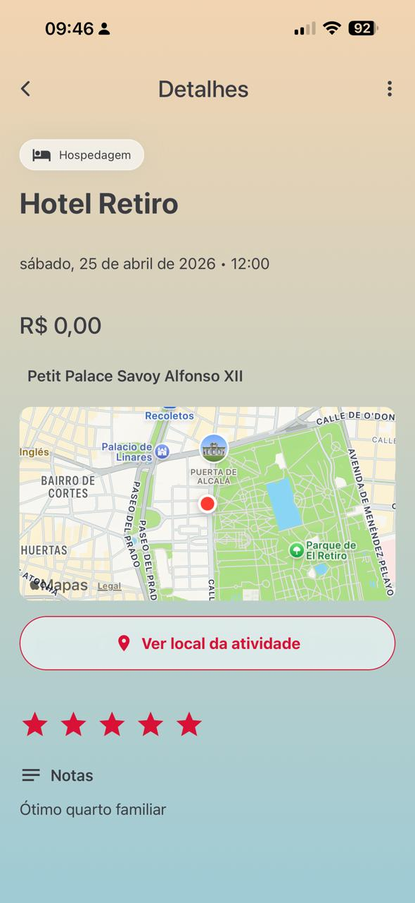
Ainda não viajou usando o app, mas planeja 4 viagens dentro dele (Japão, Vietnã, Noruega e Coreia do Sul) · entrevista em 22/07/2026, prints complementares enviados em 28/07/2026
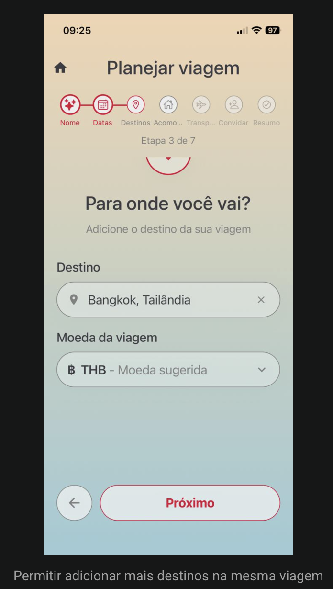
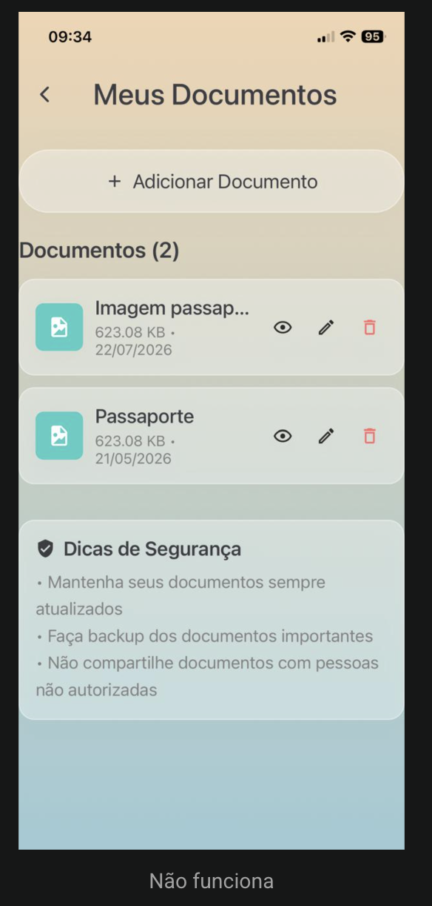
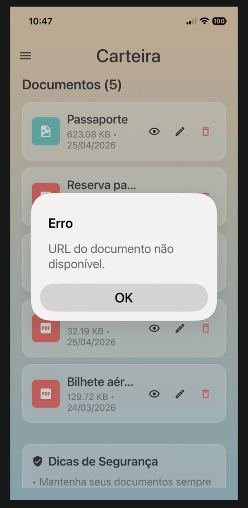
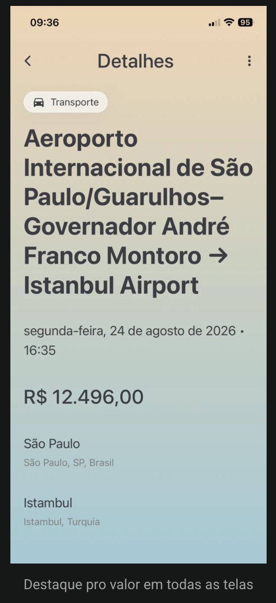
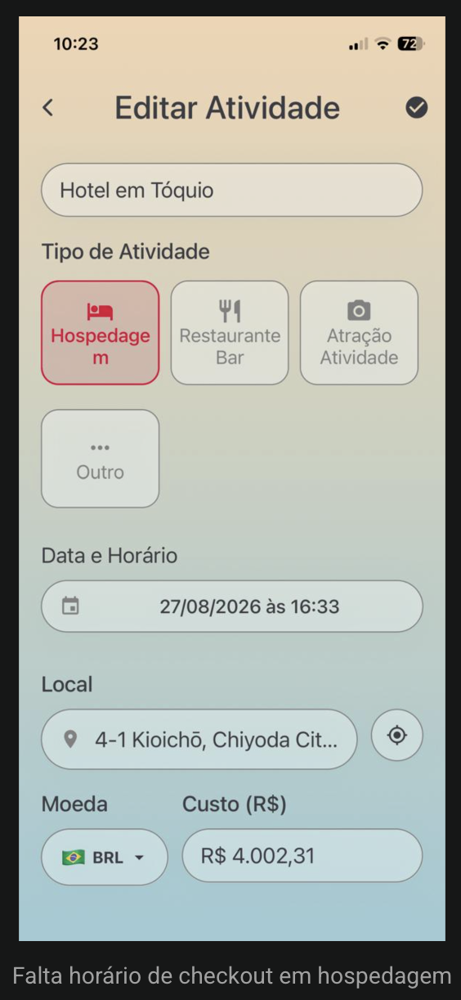
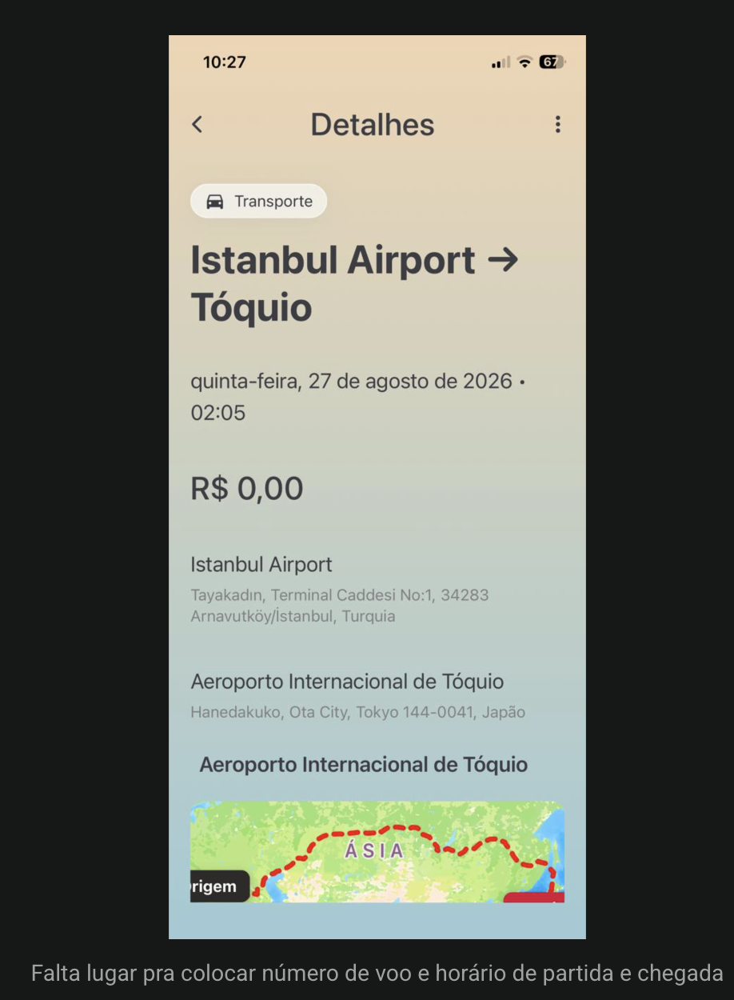
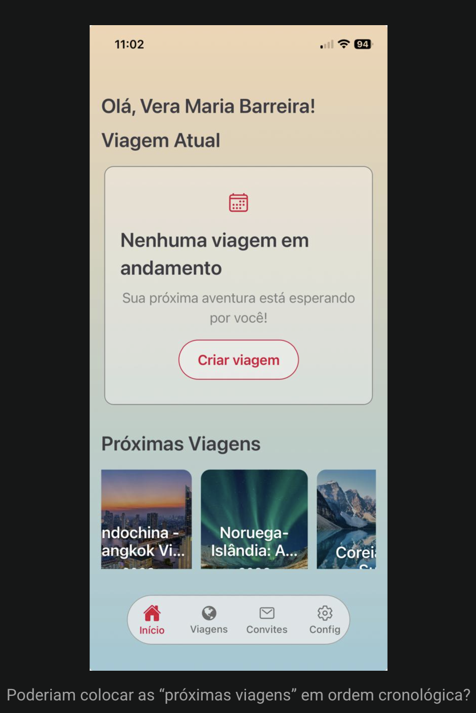
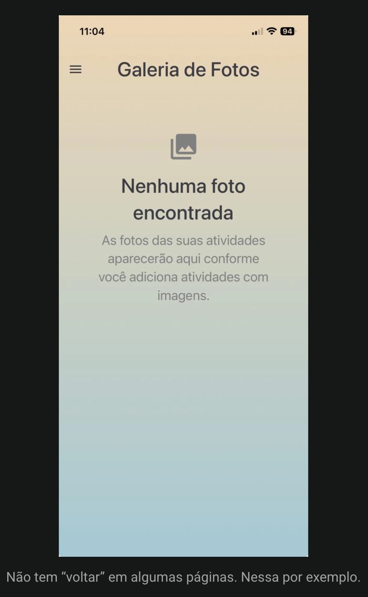
Vera tentou registrar no app uma viagem já realizada (Coreia do Sul, 2025) pra guardar como histórico. A tela de Configurações aceitou as datas passadas, mas a Linha do Tempo da viagem não atualizou junto. Só depois de entrar pelo link "Próximas Viagens" é que o app moveu a viagem sozinho pra "Viagens passadas" e a linha do tempo passou a refletir as datas corretas. Ou seja: o app tecnicamente aceita datas passadas, mas há uma falha de sincronização entre a tela de Configurações e a categorização/Linha do Tempo.
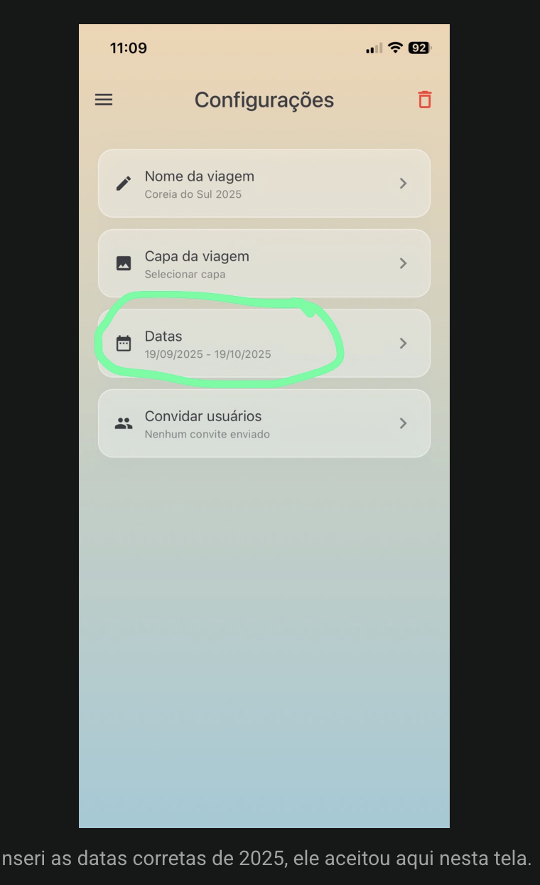
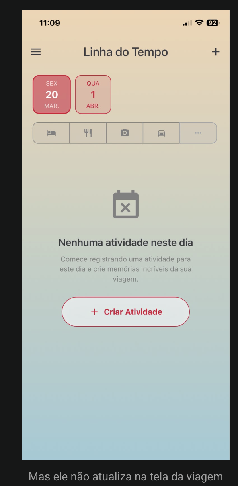
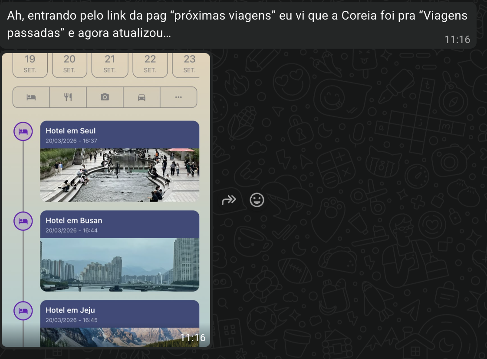
Os dois perfis são complementares: Nelson fala da experiência de uma viagem já vivida (pós-uso), Vera fala da fase de planejamento (pré-uso). Juntos, cobrem quase todo o ciclo do produto.
| Tema | Nelson | Vera |
|---|---|---|
| Nota geral | 7/10 | 6/10 |
| Fase da viagem | Pós-viagem (já usou 10 dias) | Pré-viagem (só planejamento, ainda não viajou) |
| Input manual | Acha cansativo, só registra eventos grandes | Também é 100% manual, mas o problema citado é falta de campos, não o esforço em si |
| Colaboração/grupo | Convites falharam tecnicamente, grupo abandonou | Não testou, mas destino/moeda únicos já dificultam viagens em grupo com paradas diferentes |
| Documentos/carteira | Pouco usada, preferiu carteira digital da Apple | Erro técnico confirmado: "URL do documento não disponível" |
| Transporte | Registrou voo e trem sem detalhar | Aponta falta explícita de campo de nº de voo e horário de chegada |
| Hospedagem | Não comentou | Falta campo de checkout |
| Gastos | Só acompanhou valores grandes | Valor total aparece com destaque excessivo em várias telas |
| Recomendação/IA | Não sabia que existia, nunca usou | Quiz de perfil não parece influenciar nada nas sugestões |
| Ponto mais elogiado | Álbum de fotos e organização pós-viagem | Mapa automático ao inserir endereço |
| Pedido em comum | Dicas culturais/locais pra evitar perrengues | Recomendações de lugares menos turísticos e comida boa e barata |
Só duas entrevistas já revelam um padrão que provavelmente vai se repetir com mais usuários: o TAIRU entrega bem no fim do ciclo (diário e álbum pós-viagem) e falha nas pontas, planejamento com múltiplos destinos e colaboração em grupo. Os bugs relatados (documentos, sincronização de datas, convites) não são só polimento, são quebras de confiança logo nos primeiros contatos com o produto.
Vera aponta isso diretamente, e explica também a dificuldade de Nelson em gerenciar uma viagem em família com destinos diferentes.
Falhou na prática pra Nelson (convites) e já nasce limitada pra Vera (só 1 destino por viagem). É um recurso citado como desejado por ambos, mas não testado com sucesso por nenhum dos dois.
Nelson reclama do esforço de digitar; Vera reclama de não ter onde digitar o que precisa (nº de voo, checkout). São dois problemas diferentes que pedem soluções diferentes.
Nelson nem sabia que existia; Vera percebeu que existe, mas acha que não influencia nada. Nos dois casos, o resultado prático é o mesmo: zero impacto percebido na experiência.
Nelson quer evitar perrengues (gorjeta, transporte); Vera quer lugares menos turísticos e comida boa e barata. É o pedido de funcionalidade nova mais consistente entre os dois relatos.